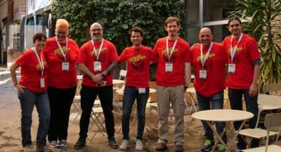

About the event / A place to share knowledge
Software Crafters Barcelona is a two day event which aims to attract and connect software development professionals, who feel passion for their work and share the values and principles of the Crafters movement.
It aspires to be a meeting place that facilitates the magic of learning, teaching and collaboration, where participants create a gratifying and enriching experience.
It doesn't matter who you are, your knowledge level or your favorite programming
language. We encourage you to participate if you:
- are passionate about software.
- want to be involved, or are already involved, in the Software Crafters
movement.
- want to share your knowledge, experience, or skills.
- enjoy learning by helping others and believe that sharing is key to your
own progress.
In addition to technical contents, it will be fun. There will be beers, and
we'll have stimulating conversations late into the night.
Software Crafters Barcelona is an opportunity to meet new friends, face new
challenges while learning and further improve your skills. Join us!


Schedule
Opening
KEYNOTE
Break
Código sostenible
Código sostenible es aquel capaz de soportar el paso del tiempo, siendo fácil de modificar y de ampliar.
En esta charla te contamos valores, principios y técnicas concretas para hacer que el código de vuestro equipo se mantenga fresco como un proyecto green field.


La nueva generación de mujeres programadoras
En las décadas de los 60 y 70, antes de la llegada del ordenador personal, cuando las computadoras eran aparatos que ocupaban habitaciones enteras, las mujeres eran casi la mitad de las empleadas en programarlos. Fue un momento histórico especial. Al principio de la década de los 80, las estudiantes de informática suponían un 37%. Año tras año la cifra ha caído en picado hasta llegar al 17% en la actualidad.
Sin embargo, hay esperanza. En esta charla hablaremos sobre procesos emergentes que están ayudando al nacimiento de una nueva generación de mujeres programadoras. Mujeres empoderadas, incluso con carreras profesionales en otros ámbitos que deciden dar un salto al vacío y reinventarse. Tienen mucho que aportar en este sector.
La cuestión es: ¿Qué se puede hacer para impulsarlas?


Lunch
Open Space!
Break
Open Space!
Closing
Cóctel/Networking
Registration
Opening
KEYNOTE (TBD)
Break
11:30 - 12:25

From logs to traces
Observing systems might be complex. In the past, often using logs and/or metrics we have been able to identify issues and understand our systems. The approach gets a little bit more tricky when using distributed systems

Contratando en un mundo de unicornios cuando eres una simple zebra
¿Burbuja o adaptación de la industria? ¿Es sostenible?
Qué más da, necesitamos gente y no estamos en una empresa con 200M en una caja ¿Qué puede hacer el equipo? ¿Cómo podemos aplicar nuestra experiencia en el desarrollo de producto?
En esta charla revisaremos el viaje de aciertos y errores de un equipo de desarrollo para conseguir un proceso de selección simple, efectivo y diverso.
Un proceso por y para el equipo utilizando los principios y valores con los que desarrollamos día a día productos de software.

Lunch
Open Space!
Break
Open Space!
Break
Open Space!
Closing
Cóctel/Networking
Registration
Opening
10:00 - 10:55
KEYNOTE (TBD)
Break
Mutation Testing: convierte tus tests en una máquina de cazar bugs
Cuando "todos los tests pasan" pero al hacer algún refactor o añadir funcionalidad aparecen bugs, es posible que algunos mutantes hayan aparecido en nuestro código y hayan provocado comportamientos inesperados.
Veamos qué podemos hacer para conseguir unos tests robustos y garantizar que nuestro código puede evolucionar de forma segura.

12:30 - 13:25

CRIMS: El cas del canvi de BD que no va deixar rastre.
Una de les avantatges de l'arquitectura hexagonal és que és possible canviar el sistema de bases de dades sense molt d'esforç. Però, quantes vegades ha passat això en un sistema que ja funciona en producció?
Viatjarem en el procés que hem viscut els últims mesos que ha consistint en la migració d'una base de dades d'una aplicació que estava en MongoDB a un PostgreSQL.
Tot sense downtime i sense avisar als stakeholders 🤫.
Lunch
Open Space!
Break
Open Space!
Closing
Cóctel/Networking
Registration
Opening
10:00 - 10:55
KEYNOTE (TBD)
Break
Desarrollo Lean: posponer decisiones (Workshop)
Mediante ejemplos y práctica guiada queremos ayudar a los asistentes a practicar desarrollo de software lean, haciendo especial hincapié en posponer decisiones lo máximo posible. Porque no queremos comprometernos con decisiones difíciles de cambiar/revertir cuando aún nos falta información sobre las necesidades o si realmente algo “es útil”, ¿verdad?
Animaremos y guiaremos hacia dar pequeños pasos creando soluciones simples y fáciles de evolucionar. Los ejercicios no requieren escribir código.


Lunch
Open Space!
Break
Open Space!
Closing
Cóctel/Networking
Registration
Opening
KEYNOTE
Break
11:30 - 12:25

Delivering incrementally: lessons about breaking up complex features
Do you find it hard to provide estimates for large complicated features? You're not alone! Let's explore ways to slice the work, develop in parallel across teams, improve predictability and testability and avoid Big Bang releases.
SPONSOR TALK
Lunch
Open Space!
Break
Open Space!
Closing
Cóctel/Networking
Registration
Opening
Troceando la cebolla. Receta para pasar de Onion-Clean Architecture a Vertical Slice Arquitecture
La arquitectura Onion / Clean / Hexagonal suele ser vista como un gold standard a la hora de organizar el desarrollo de una aplicación.
Pero... ¿Seguro que es siempre la mejor opción? ¿Hay alguna forma mejor de organizar nuestro código?
En esta sesión veremos otra opción: la llamada Vertical Slice Arquitecture (VSA), una forma diferente de organizar nuestro código que nos puede aportar muchas ventajas.
¿Qué vas a aprender en esta sesión?
- Desventajas de una arquitectura Onion/Clean/Hexagonal
- Ventajas de la Vertical Slice Architecture.
- Como encaja DDD o CQRS en este tipo de architectura.
- Cómo pasar de una Onion Arquitecture a una Vertical Slice Arquitecture (Veremos un pequeño ejemplo con código)

10:45 - 11:00
Dare to try
I got hired by Microsoft after replying to an ad in a magazine (yes, I am this old).
I created my first workshops after proposing my manager to create them on my free time (since we never found the time at work).
I taught an O'Reilly Online Live Training after writing them asking for a testing training they didn't have.
I got a 4 day/week job in a 5 day/week company after asking for it.
This lighting talk is about taking the initiative and being bold enough to try things we deem unlikely or unfeasible. Sometimes these things happen, but only if the opportunity is created, so I'd like to share my experiences with everyone and hopefully encourage someone to try ;)

Break
Aprendizaje con esteroides (y sin sacrificar tu vida personal)
¿En que se parecen perfeccionar la técnica de un revés de pádel, practicar inversiones de acordes en el piano, conseguir farmear 10 minions por minuto en el League of Legends y aplicar TDD de forma efectiva en tu proyecto? Durante la pandemia me ha dado tiempo a buscarme varios hobbies, y como cuando me meto en algo me meto hasta el fondo, he profundizado y estudiado cómo optimizar el aprendizaje de cada uno de mis hobbies. En esta charla mostraré algunos conceptos y sus aplicaciones que podemos extrapolar de estas disciplinas y aplicar a la mejora de nuestro Craft.

How to manage your legacy fears!
De repente, luego de una interesante reestructuración de equipos en el área de desarrollo, te encuentras en un equipo nuevo, con algunas aplicaciones desconocidas y que además son parte importantísima del core del negocio!... tampoco tienen testing, ni documentación, ni referentes a quién preguntar!
No las quieres tocar, si hay una US planificada relacionada, ¡te pides vacaciones!
Algunas de estas aplicaciones fueron cedidas y adoptadas con no mucha más información que su nombre (en clave), han ido creciendo desordenadamente, los que sabían cómo funcionaban ya no están en la empresa, están en un framework desactualizado, tienen configuraciones hardcoded, sólo son ejecutables en producción… son dificiles de cambiar, de optimizar, de escalar…
Como equipo “maduro” nos toca hacer nuestros los proyectos que hemos adoptado, pero ¿por dónde empezamos?. Se nos ocurre apoyarnos en algunas herramientas para soportar nuestro code discovery, para hacer refactoring seguro, y para dar nuestros primeros pasos hacia la observability
En esta charla os explicaremos qué pasos hemos seguido y qué herramientas nos han funcionado (y cuáles no tanto), para poder hacer que nuestras aplicaciones sean realmente nuestras: poder deployar rápido y sin miedo, modernizarlas sin contratiempo, mejorarlas mediante testing, hacer refactoring continuo y a gusto, simplificar el código, hacerlas fácil de entender y con el tiempo: hacerlas optimizables, escalables, evolucionables, y adoptables para los que vengan después.
Esto nos permitirá soportar los nuevos picos de demanda que afortunadamente, estamos empezando a tener luego de una época pandémica.
Lunch
¿Green Software? ¿Esto de qué va?
Como devs, el software que construimos definirá la tecnología de los próximos años. Tenemos la oportunidad de decidir cómo queremos que sea esta tecnología (accesible, rápida, fiable ... ) ¿Qué tal si añadimos una dimensión más a la mezcla?
Intel, Microsoft, Github... ya están trabajando para que el Green Software esté en primera página, pero no hace falta ser una de las grandes para empezar a tenerlo en cuenta.
Veamos qué es el Green Software, como puede ayudarnos a desarrollar mejor y cómo introducirlo en nuestro día a día.

Ya sé Machine Learning pero...¿estoy preparada para el mundo real?
Después de trabajar como backend y SRE, me he formado en DataScience y ML. Hice un máster en el que me enseñaron cientos de cosas y aprendí a desarrollar modelos de ML e incluso redes neuronales.....
Pero llegué al mundo real y descubrí que tenía un montón de conocimientos que solo podía usar en mi máquina......
Descubrí que el reto ya no está en desarrollar modelos de ML.
El reto está en construir sistemas de ML integrados con nuestros productos y que funcionen en producción, se puedan monitorizar y se puedan observar de forma continua.
Hoy vengo a explicaros las diferentes opciones de cómo utilizamos nuestros modelo de ML en producción y cómo los estamos integrando en nuestros productos.
Os voy a contar los problemas que tenemos pero también veréis como desplegamos a producción y monitorizamos nuestros modelos en minutos.
Si quieres ser parte del futuro en el desarrollo del software vas a necesitar conocer todo lo que te vamos a mostrar.


Break
Reformas de FRONTanería
¿No te cansa que te pidan que hagas código limpio, pero que no te haya dicho nadie en qué consiste?
¿No te da pereza que en charlas sobre buenas prácticas no te enseñen cómo plantear los refactors para ir mejorando tu aplicación?
Pues si es así, esta es tu charla. Haremos "reformas" sobre una aplicación de front, donde poco a poco, iremos mejorando su legibilidad y mantenibilidad de forma muy práctica y sencilla. ¡No te la pierdas!

Closing
Registration
Opening
En búsqueda de una IA inclusiva
La inteligencia artificial (IA) es una de las tecnologías más disruptivas del momento, que no para de crear nuevas oportunidades para mejorar la calidad de vida de las personas alrededor de todo el mundo mediante contribuciones en diferentes ámbitos y sectores como pueden ser la educación o la salud.
¿Pero, qué pasaría si estos algoritmos estuvieran "aprendiendo" a ser injustos? El efecto podría ser catastrófico. Por ejemplo, un algoritmo de búsqueda de empleo podría favorecer candidatos varones frente a mujeres, o asumir que las mujeres son más adecuadas para trabajos específicos como "enfermera" o "secretaria". Esa solución estaría sesgada y tendría un impacto negativo en nuestra sociedad. Por lo tanto, es necesario levantar nuestras voces y concienciar sobre la importancia de trabajar hacia sistemas que sean justos e inclusivos.
Hoy en día, nos encontramos estos desafíos a diario en el campo de la inteligencia artificial, debido en gran medida porque no hay una clara definición de qué es justo y que no. En esta sesión veremos los principales problemas asociados a los sesgos en nuestros datos y como podemos construir modelos que sean éticos, justos e interpretables.

10:45 - 11:00
Catching production errors before our customers
I will explain how to setup Sentry which is a tool for catching and tracking exceptions very easy to include in our products. Sentry works with multiple programming languages so I hope this matches the general purpose of the conference.

Break
Comprehending hardly to understand software
Cada día se añaden millones de líneas de código a nuestros proyectos que tenemos que mantener. Este inventario que vamos generando incrementa la complejidad de nuestro software y complica la búsqueda de los ejes de cambio que existen para modificar el comportamiento de nuestras funcionalidades o de añadir nuevas.
Existen multitud de literatura y conocimiento asociado a crear nuevo software pero muy poco a entender el que ya está escrito. En esta charla contaremos nuestras herramientas, prácticas y heurísticas a la hora de enfrentarnos a proyectos que son complejos de entender, ya sea por su tamaño, como por las decisiones de diseño empleadas.
La charla está enfocada desde un punto de vista práctico para que se pueda aplicar en el día a día para ayudar a enfrentarse al problema de la compresión de software complejo de entender.


12:30 - 13:25
A la recerca del CSS amagat a Barcelona
En aquesta xerrada veurem com desenvolupar una landing animada amb CSS i la llibreria de JS Greensock. Recorrerem Barcelona en una ruta animada pels seus edificis més emblemàtics, descobrint quines propietats de CSS tenen amagues.

Lunch
Muda, Mura, Muri: mitos y prácticas aplicando Lean Software Development
¿Consideras que vuestro equipo tiene puntos de mejora que has visto en charlas y libros? ¿Conoces prácticas de XP y de Lean software development que os pueden ayudar pero no acabas de saber explicar bien el por qué funcionan? ¿Quieres introducir alguna mejora, pero no tienes claro cómo “venderla” al equipo?
Una de los ejercicios que más me ha ayudado en los últimos años, ha sido basarme en los 7 tipos de “waste” (muda) de Lean software development.
Me ha ayudado a combatir algunos mitos como que "la especificación temprana reduce el tiempo de desarrollo", que "estimar mejora las predicciones" o que "el testing es para encontrar bugs". Y me ha guiado para saber que prácticas implementar en cada momento y para qué las necesitábamos (pairing/mob, TDD, Vertical slicing, CI/CD… ).
Basándome en mi experiencia explicaré que prácticas ayudan para cada tipo de “waste”, por qué y que impacto tienen en nuestro proceso.

16:00 - 16:55
Is having a QA a a symptom of a dysfunctional team?
I’ve seen many teams that start only with developers and a very tight deadline. When that happens, teams are in a rush to deliver and quality might not be their priority, so it is usually sacrificed with the promise of taking care of it latter. This becomes a problem, to the point where team delivery slows down and adding new features requires more development work. By this time, teams start thinking about how they can increase the quality in their project, and they most commonly resort to hiring a QA person for this endeavour. However, without the proper team structure and support this is going to be a very difficult task for our new team member.
Many times the QA role is only introduced in teams when things are broken, so I started questioning myself whether it is a symptom of a dysfunctional team.
During this talk I want to go through my journey as a QA. I started as a manual QA, then I started doing automation, at some point I lead a QA department, I went back to automation and finally moved to software development. During this journey my role has changed a lot. I would like to explain tips and tricks that helped me build quality as a practise inside the team instead of making it a responsibility of the QA person.

Break
Data y no te ahogues.
Un data lake es como el océano, todos imaginamos lo grande que es, somos conscientes de su magnificencia, incluso creemos saber qué seres lo habitan cuando nos arrimamos a la orilla, pero ninguno sabe lo que realmente albergan sus profundidades. El análisis de datos pretende aportar luz a esas oscuras profundidades de un data lake.
Con el traje de buzo y una botella de oxígeno bien cargada saltaremos del barco y nos sumergiremos en los beneficios de aplicar QA en nuestro negocio, un posible proceso de planificación y presentación de resultados. Todo ello desde la perspectiva de quienes acaban de introducirse en estas aguas y que buscan acercarse, de forma asequible, a estas vastas e ingentes cantidades de datos que nadie conoce en profundidad.
Closing
Registration
Opening
09:45 - 10:40
Epic Software Fails
Do you know where the concept of a "bug" to describe a software malfunction comes from? It might be older than you expected. During the history of software development, there have been many epic software bugs; in this session, we will explore some of these failures, not the catastrophic ones (there are an amount of them), but those that are funny and finished well.
The way of presenting these "bugs" will be a bit different as you might expect, as every bug will have its representative music.
If you want to laugh a bit, listen to some music and learn a bit about software development history, then come and join this session.

10:45 - 11:00
Testing: What's it all about?
Testing: What’s it all about? Everyone talks about testing but what does it all mean? What are the benefits (and the pitfalls)! of writing test-driven code? This lightning talk will be a high-level overview of why testing matters, how it can turn you into a better developer and from a beginner’s perspective, why testing isn’t so scary after all.
Break
Pair Programming: Poop & Pee adventures
¿Es el pair programming una metodología para todos?
Hablaré de la problemática del pair programming:
- situaciones descompensadas de poder
- diferencia de procesos mentales de la gente
- qué pasa si uno es más driver y otro es más "reposado"
- la necesidad de adecuar el ritmo cuando entra gente nueva en el equipo y no están los dos en el mismo punto de conocimiento del producto
- el talante y la paciencia necesarios
- no hacer sentir mal a tu pair por no estar en tu mismo punto
- realmente no son necesarios los merge/pull requests con el pairing
Y por supuesto hablaré del drama de ir al WC cuando estás de pairing :D
Desarrollos frontend Anti-frágiles
Una charla técnica (no tecnológica) en la que contaremos cómo construimos aplicaciones frontend modernas (react, react-native, vue, etc.) mantenibles, agnósticas del framework y cómo nos traemos las buenas prácticas que tan interiorizadas tenemos en el backend al frontend.
Hablaremos de arquitectura de componentes, ui-kits, estado local vs global, arquitecturas limpias, testing, happy-paths y gestión de errores, aislarnos del API y muchos conceptos más. Veremos desde nuestra experiencia cómo todo ello nos ha ayudado a trabajar de manera sostenible en proyectos frontend de gran tamaño a nivel funcional.


Lunch
From Software to Product Developers
Cuando entré en Audiense los sprint plannings duraban toda una mañana y la relación con Producto se basaba en recibir User Stories. Dos años después los plannings duran 15 minutos y consideramos que el equipo de desarrollo y el de Producto son uno solo.
En esta charla intentaré mostrar con qué dinámicas hemos conseguido aplicar la filosofía de Product Developer en nuestro equipo de producto.

16:00 - 16:55
Functional programming vs. Object-oriented Programming
At first, this was going to be a talk on the awesomeness of functional programming. Then, we had to admit that in real-life, we use a lot more object-oriented principles. So here it is, the talk to join both! We’re going to look at different features and judge how they would go if you’d use one principle or the other. We want to show you why it would be a bad idea to close yourself to one architecture just on principle, and we’d love to spark a debate on when one makes more sense than the other.

Break
Aprende a convivir con monolito legacy (o no)
Uno de los problemas más comunes desarrollando es cómo gestionar con el legacy. Y una de las soluciones más comunes a ese problema es reemplazarlo por la v2. El problema es que dentro de 4 años esa v2 se vuelve legacy y la solución es montar la v3… ¿o no? 👀
Esto hace que en lugar de monolitos acabemos teniendo monstruolitos que nadie quiere trabajar en ellos y que frenan mucho la velocidad y motivación de desarrollo. 👹
En esta charla exploraremos **diferentes estrategias de gestionar el legacy**, desde micro a macro diseño. Yendo pasito a pasito, y sobretodo, mostrando soluciones realistas y pragmáticas sin tener que parar todo el negocio todo el año para montar la v2. ✨
Todo esto gracias a técnicas de refactoring, testing, migración progresiva a una buena arquitectura de software con ejemplos en diferentes lenguajes de programación.


Closing
Registration
Opening
Scout Mindset: más allá de la best practice
A menudo se habla de clean code y de aplicar el principio de boy scout, pero como pasa con los valores, va más allá de ser una técnica, tiene que ser una mentalidad compartida en el equipo para poder contener la deuda técnica del día a día.

Break
El juego del DDD (Workshop)
El objetivo de este workshop es sentar las bases para aprender DDD y explorar este formato de cartas y tablero como herramienta para enseñar, alinear equipos y tener debates técnicos alrededor del concepto de DDD.
"El juego del DDD" en realidad es un proceso, el cual a través de ciertas actividades, ganaremos alineamiento sobre conceptos de DDD.
Una vez tengamos esas actividades interiorizadas, jugar nos servirá para mantener esa alineación en el equipo.
Si no tienes experiencia en DDD, no te preocupes, disfruta del viaje que te ofrece este workshop...

Lunch
15:00 - 16:55 (2 hours)
Technical writing fundamentals (Workshop)
Learn the critical basics of technical writing. Get an introduction to technical writing through a set of theoretic best practices that will be followed by exercises that will put the learned theory into practice. Based on Google's Technical Writing One course (https://developers.google.com/tech-writing/overview)
Break
Closing
Registration
Opening
SPONSOR TALK
Break
Coding with Crafter Coaches (Workshop)
Lunch
La importancia de sentirse acompañada (Workshop)
Gracias a nuestra colaboración con Stepward (bit.ly/Step4wardhome) las mentoras nos hemos dado cuenta de la importancia de sentirse acompañada cuando haces un cambio de carrera tengas o no experiencia en el sector tecnológico, para poder bajar la ansiedad y la incertidumbre, sería interesante crear un punto de debate sobre este factor en el momento de crecer profesionalmente y como compartir los privilegios que tengamos con otros que estén en situación desfavorecida.

Break
SPONSOR TALK
Closing
Diversity Matters / We welcome you
In the Software Crafters Barcelona movement brogrammers do not prevail, and year after year the organizational committee becomes more diverse.
We claim the Software Crafter movement as inclusive, because we know that diverse teams develop better software. That's why we want to make a clear invitation to collectives often underrepresented at tech events.
Women, migrants, racialized people, functional diversity folks, LGBTQIA+, etc: not only have we reserved tickets for you, but we also have a designated budget to facilitate your participation in the event. If you have any questions or suggestions, just drop us an email at SoftwareCraftersBcn [at] gmail.com or DM us on Twitter @bcnswcraft. We'll welcome you with open arms!


{kind=link}
{kind=link}
{kind=link}
Code of Conduct/ Don't be a jerk!
General
All attendees, speakers, sponsors and volunteers at our conference are required to agree with the following code of conduct. Organizers will enforce this code throughout the event. We are expecting cooperation from all participants to help ensuring a safe environment for everybody.
Location
Hotels
There is an important number of hotels near our event. Furthermore, for a cheap solution airbnb can provide you with a relaxing place to sleep. And if you need free accomodation, we recommend you to check couchsurfing. It’s a welcoming platform and there are a lot of great hosts in Barcelona, we know it from our own experience.
Organisation / Many hands make light work
This event would be impossible without the help (and time) of all its volunteers.
We welcome everyone as we believe that a more diverse environment will create a better
event for all the community.
If you are interested in helping to organise this year's event or the next one,
do not hesitate to contact us at softwarecraftersbcn@gmail.com